Kapitel 1
Du kom till världen
30 juli 2008. Onsdag. 01:36.
Ann-Sofie Karolina Rönnqvist. 3 470 gram, 49 cm. 10/10 på Apgar. Det var en varm dag — en av de sista den sommaren. Lite moln, inget regn. :)
Dagen innan hade det dragit ihop sig till ett våldsamt oväder. Hällregn och sol på samma gång. Vi gick ut på balkongen och såg en regnbåge — rakt framför oss. Det kommer att gå bra, tänkte jag. Och inte länge efter det — en skarp smärta genom hela magen. Som om du sträckte på dig, på riktigt, för första gången.
29/7 vaknade jag tidigt. Förstod direkt. Dök, åt lite bovetegröt med mjölk medan Magnus drack kaffe och ringde förlossningen. Kl. 10.00 var vi där. Barnmorskan Suzanna tog emot oss — och skickade oss aldrig hem igen.
Jag bad om mat. De tog oss till matsalen: smörgåsar, kaffe, te, choklad. Jag drack choklad — två koppar, förstås — och sedan bar det av till rummet. Magnus hämtade väskan, jag öppnade min anteckningsbok och övade andningstekniker. I korridoren var det omöjligt att gå — plattformssandaler i värkarna är ingen bra idé. Utan skor var det kallt. Magnus kom tillbaka med rosa-vita sockar från mormor Fenja. Det löste sig.
Badet räddade mig. Jag låg där i timmar, lyssnade på Rix FM, Magnus satt bredvid i ett läderfåtölj och blundade han med, ibland. Suzanna kom två gånger och satte akupunkturnålar — en i huvudet, en i handen. Det hjälpte, båda gångerna. Vid 16-tiden provade jag lustgas. "Det funkar bra, tack så mycket" sa jag till Suzanna med full kontroll i rösten, medan allt inombords sade något helt annat.
Kl. 01:36 på natten den 30 juli förstod jag vad ordet "queen" egentligen betyder. Barnmorskan Marin körde mig till dig. "Kör mig som en drottning", sa jag. "Det är precis vad du är", svarade hon — och lämnade oss.
Du låg på pappas bröst och sov. Han lade dig försiktigt i mina armar. Jag klädde av dig direkt — precis som jag alltid hade gjort med mina dockor som barn :) — och lade dig mot min hud. Du började dia.
Ugla, min lilla kloka uggla. Jag kan inte beskriva det. Men jag kommer aldrig att glömma det.
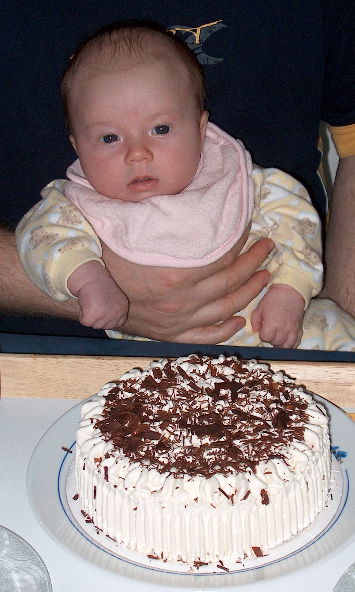
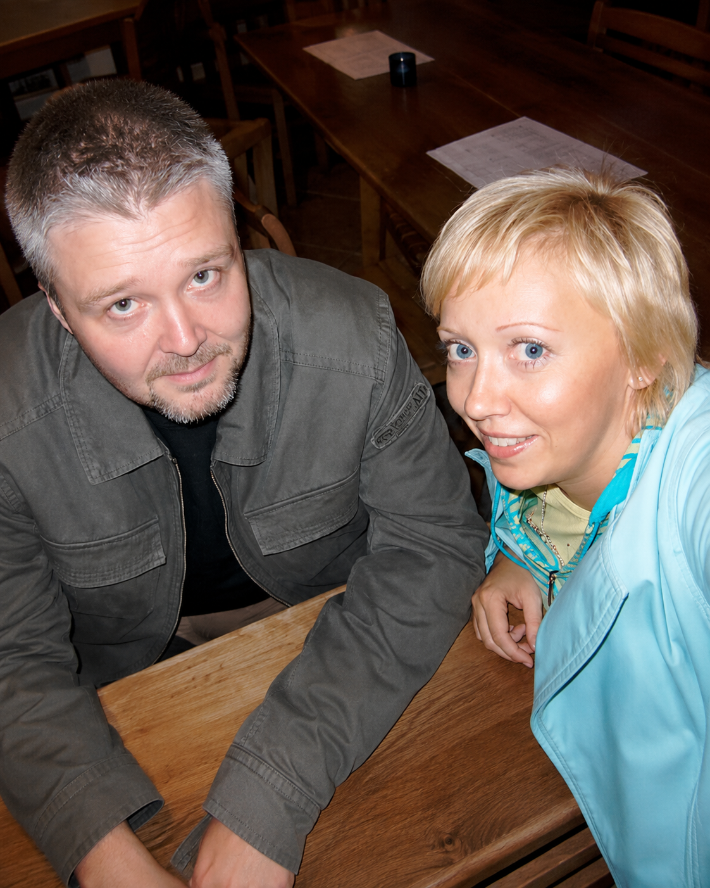
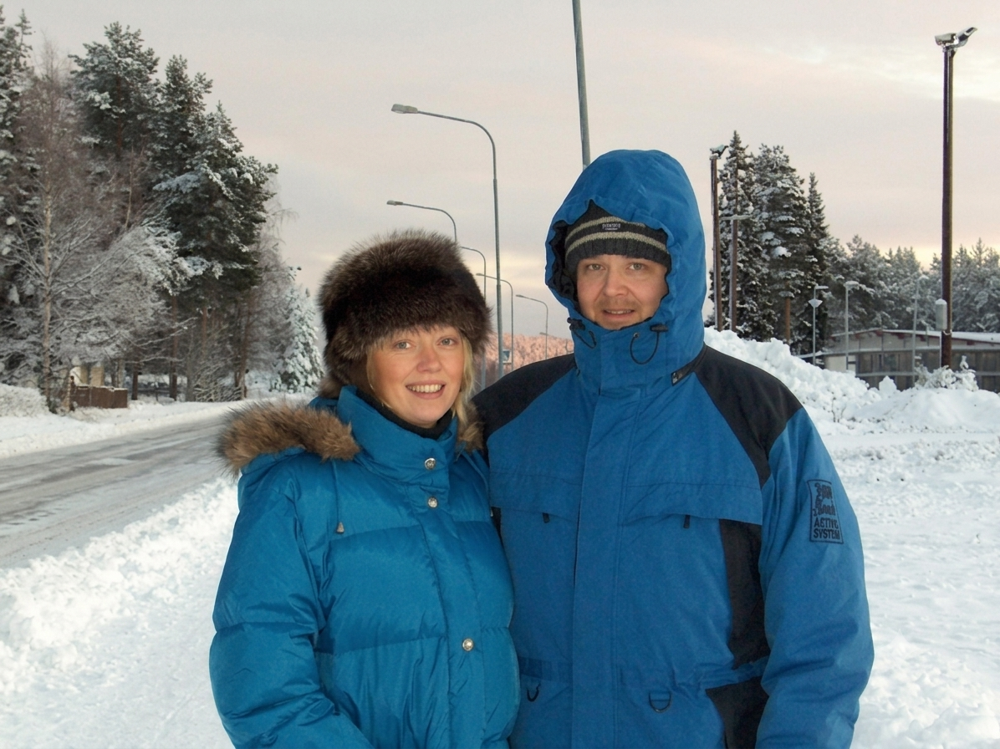
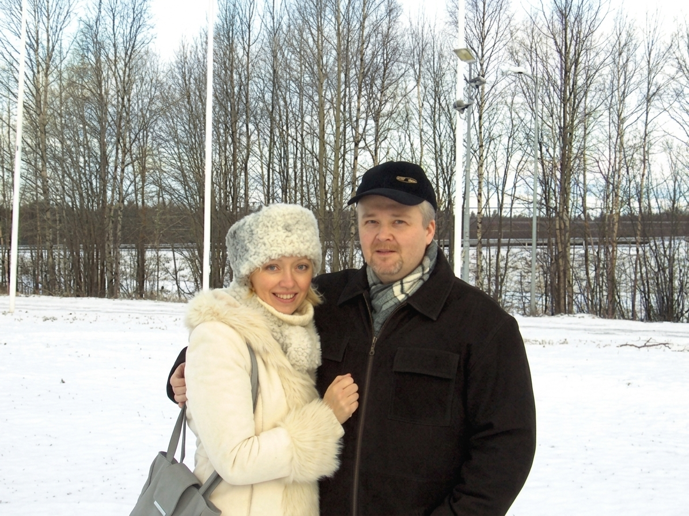
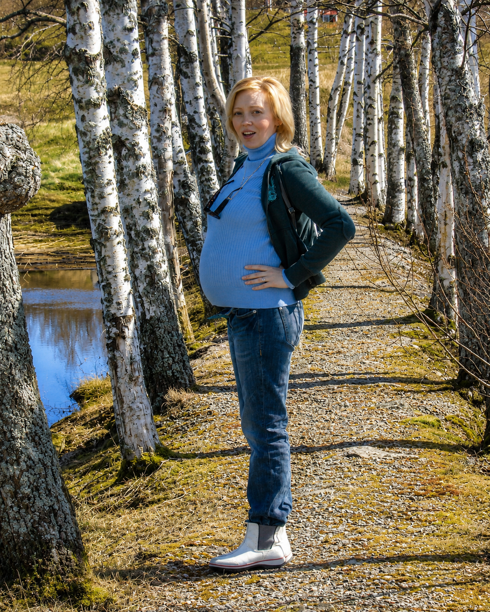
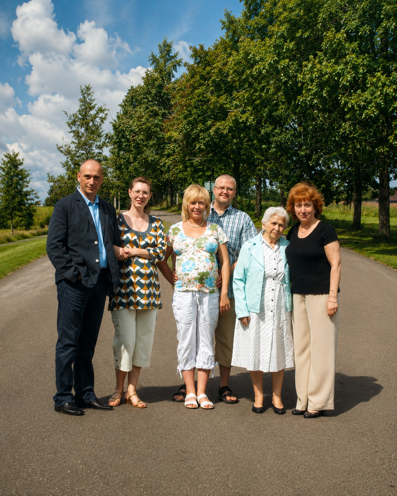
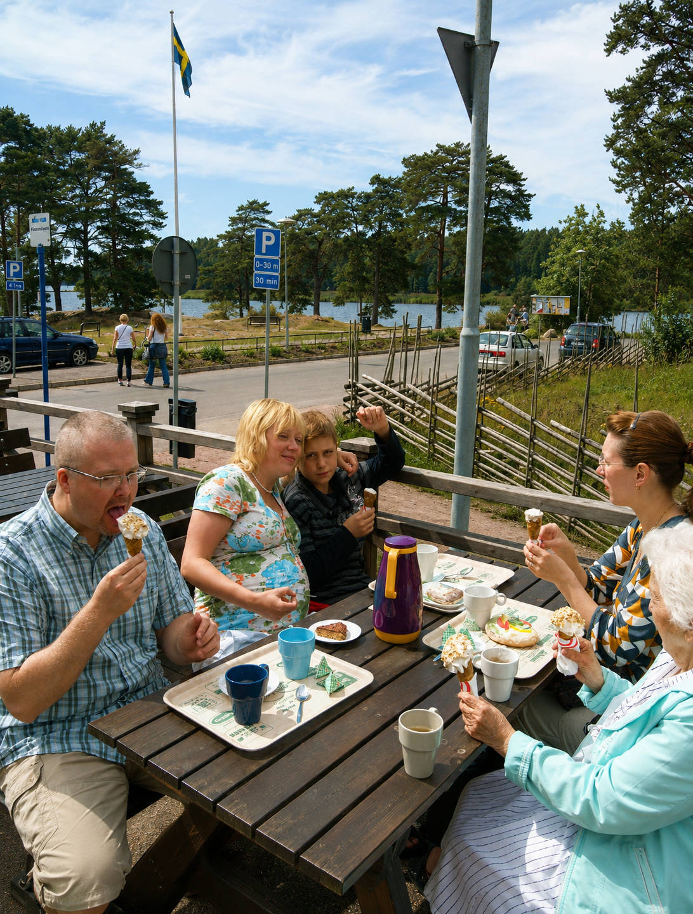
Kapitel 2
De första månaderna
Juli–oktober 2008
Samma kväll som du kom till världen firade vi. Mormor Lora såg dig och slog ihop händerna: "Bože moj, vad är det för en skatt." Du låg där och spärrade ut armar och ben och alla fingrar åt olika håll — och ibland kastade du armarna bakåt bakom huvudet. Precis som en kissekatt. Så kallar vi dig fortfarande, pappa också.
Vi var fyra dagar på sjukhuset. När vi gick därifrån tog alla farväl — barnmorskor, undersköterskor, alla.
1/8 sov du och åt, åt och sov. Baby blues kom på nätterna — lite tårar, lite irritation. Det är hormoner, förstod jag. 8/8 föll naveln av, utan ett enda problem. 16/8 var ugglekostymens storlek 56 för liten. Du hade växt ur den.
Ring-sjalen räddade oss. Du sov där så sött. 27/8 log du när jag pratade med dig — medvetet, på riktigt. Och den dagen "kände igen" du pappa — reagerade på hans röst när han kom hem från jobbet. :)
29/8 åkte vi till Örebro. IKEA, BabyProffsen, uppehållstillstånd för mig. Du skötte dig perfekt — sov, drömde, åt, sov, och påbajsala 2 gånger. :) Tack, ring-sjalen.
26/9 — efter den första riktigt sömnlösa natten med magknip och skrik och trycka-på-magen-med-böjda-ben-och-väntpåpusen — vaknade du på morgonen, bajsade ordentligt och SKRATTADE för första gången. А-ХА-ХЫ-ХН. Jag glömmer aldrig det ljudet.
4/10 sa du "ПАПА". Jag visade dig ett svartvitt foto av pappa på väggen, sa "Det är pappa" — och du upprepade det, tydligt. PA-PA. Pappa låg på soffan och hörde det. Han var mycket glad.
15/10 vaknade vi och tittade på varandra — och skrattade båda två!!!
17/10 satte jag bokstäver på kakelplattorna i badet, i ögonhöjd: Papa. Мама. Ann-Sofie. Du betraktade dem länge — och sträckte sedan ut handen och började följa dem med fingret!!! Vilken kluring.
23/10 var vi på en EU-dagskonserter med 150 människor, buller, musik, applåder. Du satt i ring-sjalen och log åt alla. En kvinna klappade dig på kinden utan att fråga — du grät inte!!! Du kröp bara lite djupare ner i sjalen och somnade.
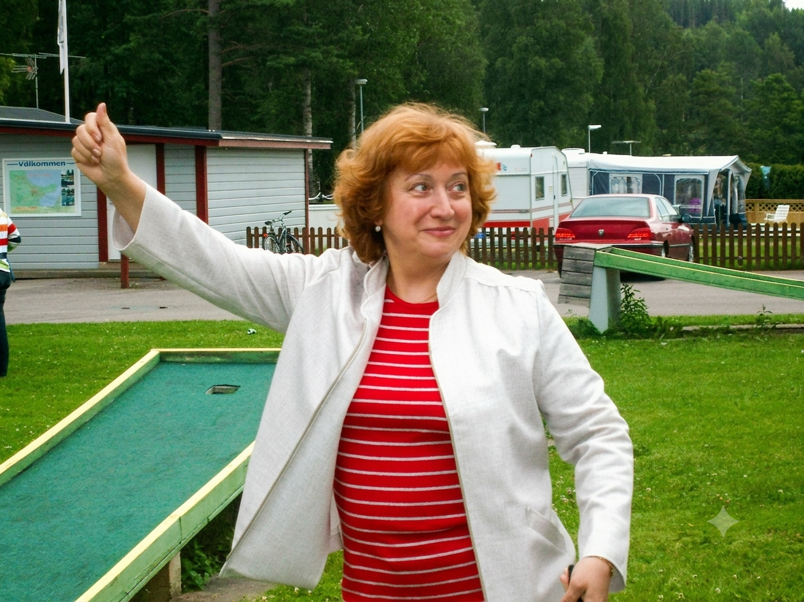
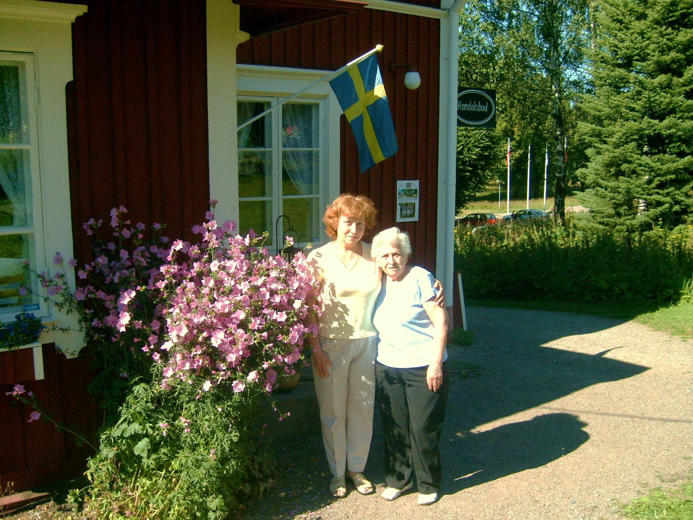
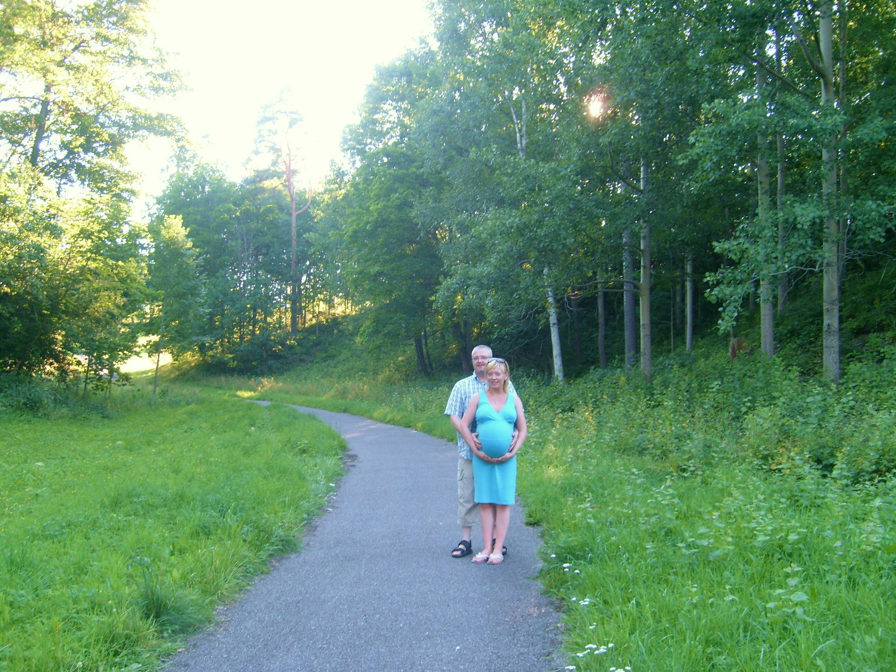
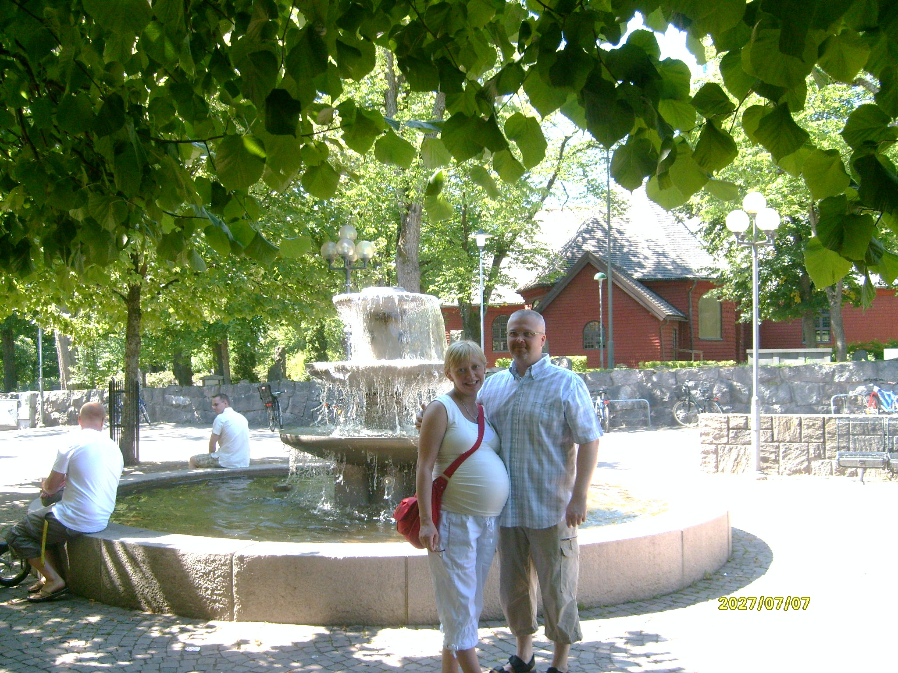
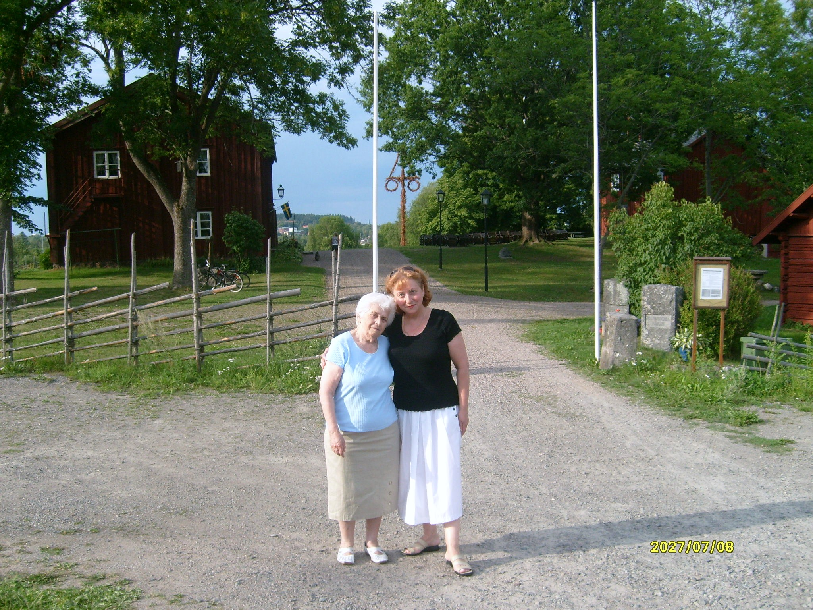
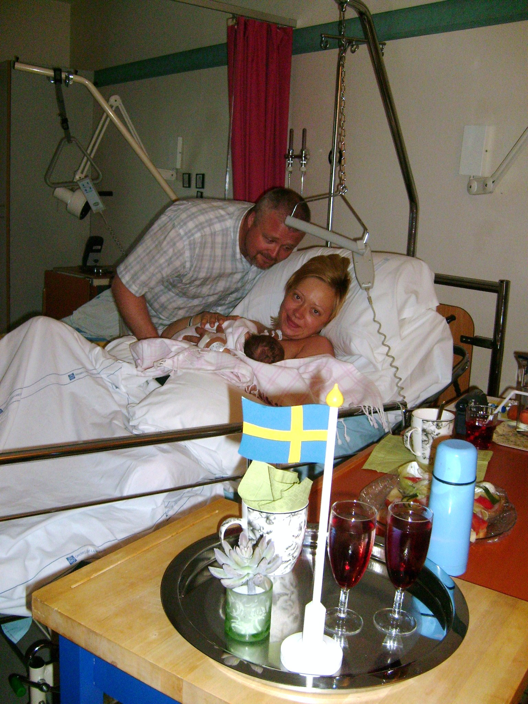
Kapitel 3
Höst och de första trumslagen
Oktober–december 2008
29/10 var det dags för de första vaccinationerna. Du grät inte när de stack dig i benen — inte ett ljud. Men när de började klä på dig efteråt i korridoren pep du lite. Hemma var du glad ett tag, sedan gnällde du och somnade, vaknade och grät, och så igen hela kvällen.
30/10 — tre månader. Du mådde inte riktigt bra efter sprutan. Armarna hängde, huvudet vacklade. Stackars liten. Men! Vi lade dig på kudden och du lekte med leksaker för första gången!!!
31/10 lärde du dig göra «бррр». Du tog bröstvårtan i munnen och vibblande med läpparna — och var så stolt över resultatet. :) Och hela tiden stack du ut tungan på det där eleganta, koketterande sättet.
1/11 — vi bytte lakan och lade dig på madrassen. Du vände dig från magen till ryggen — två gånger!!! 2/11 sjöng du och pappa duett: sången «Ann-Sofie och pappa».
5/11 «skjuter du kanoner» på morgnarna men har inte gråtit av magknip på länge. :) Vi började gå ut med barnvagnen — 1,5 timme!!! Du tittade på himlen och träden och slumrade till igen. På morgnarna sjunger du «а-а-а», «у-у» och annat efter toaletten. Det är din rutin nu.
16/12 satt vi i köket, pappa höll dig. Plötsligt — ett kraftigt «прют-прют». Vi tittade på varandra och sa i kör: «OOOO!!!» Du skrattade. Vi skrattade. Några minuter senare — «прют-прют» igen. Och igen. Och igen. Nio gånger i rad, du skrattade för varje gång tills jag hade tårar i ögonen. Det var det roligaste kvällen på länge.
18/12 hämtade jag mitt SFI-betyg. Pappa var i Norge, vi åkte dit tillsammans, du och jag. Du somnade i ring-sjalen och när de ropade upp mitt namn gick vi båda ut i mitten av salen. Alla applåderade. Du sov fridfullt mot mitt bröst genom hela larmet — musik, trampande, applåder. Sedan kom några ryska mammor och berättade för mig att jag uppfostrar dig fel. Jag försökte inte bekämpa okunnighetens väderkvarnar. :)
19/12 började du säga stavelser: «та-та-та-та, да-да-да-да». Och «ба-ба-бе».
1/12 försökte du sätta dig själv — och lyckades, ett par sekunder! Och du såg tomten på TV för första gången, i en Coca-Cola-reklam — och skrattade!!! Julen kommer till oss.
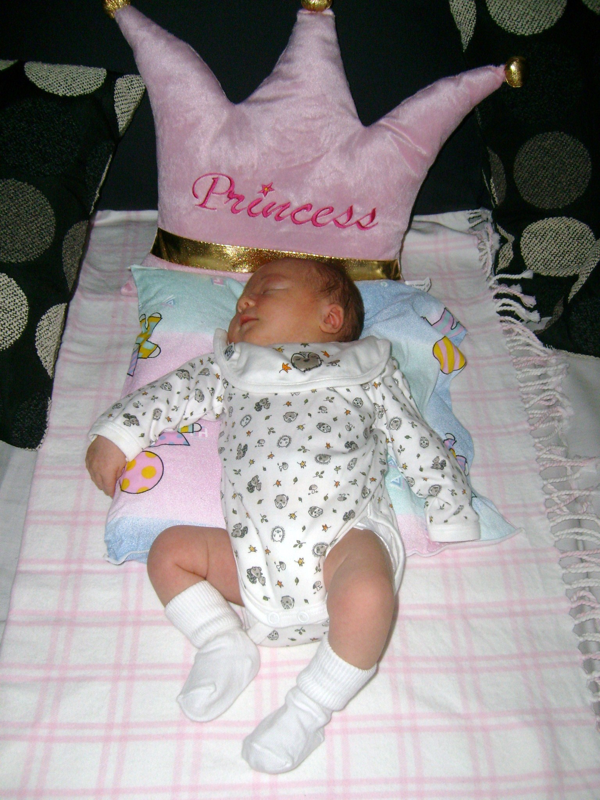
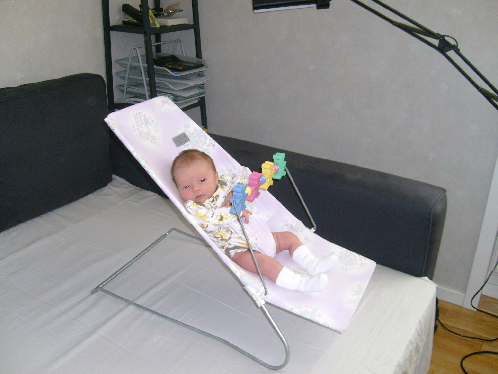
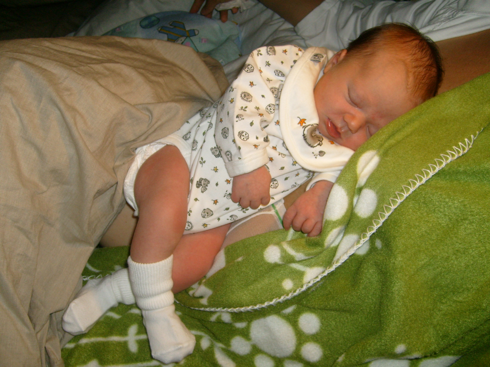
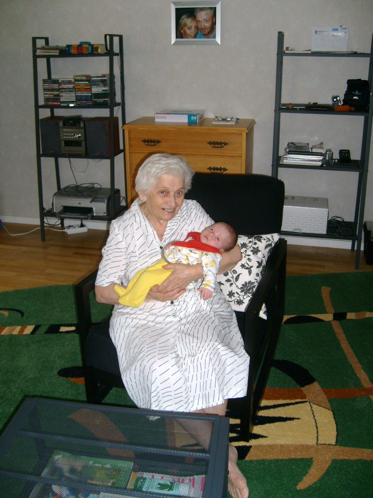
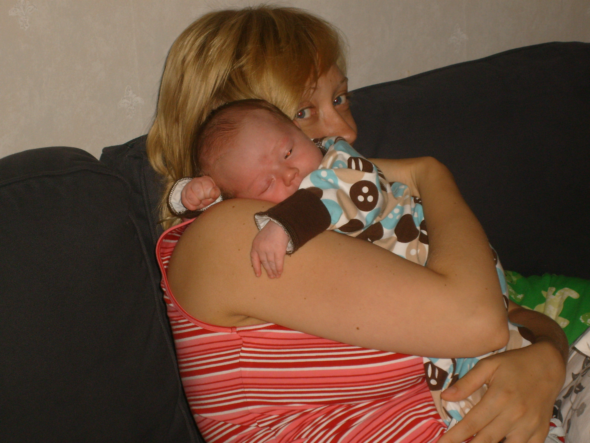
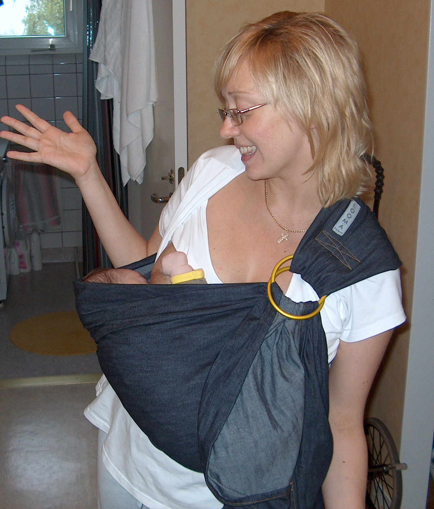
Kapitel 4
Fem månader och ett nytt år
December 2008 – februari 2009
30/12 — fem månader idag. Pappa berättade för farmor Birgit hur det gick till: du satt i hans famn, ansikte mot ansikte, och plötsligt hördes ett kraftigt «прют-прют». Så kraftigt att du vände dig om och letade — "Vem var det där?" :)
1/1 — Gott nytt år! Du såg ditt första fyrverkeri. Du klängde dig fast i mina hår och stirrade ut genom fönstret utan att blinka. Helt förtrollad. Nästa morgon var du lika lycklig över en kexask.
2/1 lärde jag dig spelet "Braво!". Jag satte dig mellan mina ben, räckte dig en leksak — och när du tog den klappade jag och ropade «Браво!». Du väntade på det varje gång efter det och skrattade med. Du vägde 7 100 gram.
4/1 började du säga «дай-дай-дай» och «мна». Nätterna pratade du tyst och ömt med dig själv: «дя дя дя тя тя тя» — och somnade sen av dig själv.
10/1 satt du ensam i några tiotals sekunder och höll balansen perfekt — men batteriet i kameran var slut och jag hann inte filma det. Du föll åt sidan precis när jag letade efter reservbatterier. :(
11/1 kl. 22:12 — du roterade 360 grader på magen!!! Det betyder att krypandet är nära.
17/1 — SITTER!!! Pappa satte dig och du satt och gungade och balanserade länge, helt på egen hand!!! 5,2 månader gammal!!!
29/1 sa du «мама» — helt tydligt, med en frågande röst, precis när jag lade dig för blöjbyte och du inte ville. Som om du sa: ta upp mig.
31/1 började vi lyssna på Radio City. Du älskar rock and roll från 60-talet. :) Jag dansar med dig i famnen och du sjunger med — «ааа».
En dag klagade jag på pappa och satte på den sorgligaste minen: "Ну папа, ну чуть-чуть надо pengar" — du tittade på oss och skrattade högt. Pappa nekade förstås inte.
Pappa var i Stockholm på kurs tre dagar. Redan första kvällen la du märke till att han saknades. Du hittade hans foto i korridoren och kramade och pussade det. När han kom hem blev du lugn igen. Det var ekonomisk kris på jobbet — vi oroade oss alla. Men du visste ingenting om det. Du lekte med din kexask och lyssnade på rock and roll.
28/2 — resa till Boden.
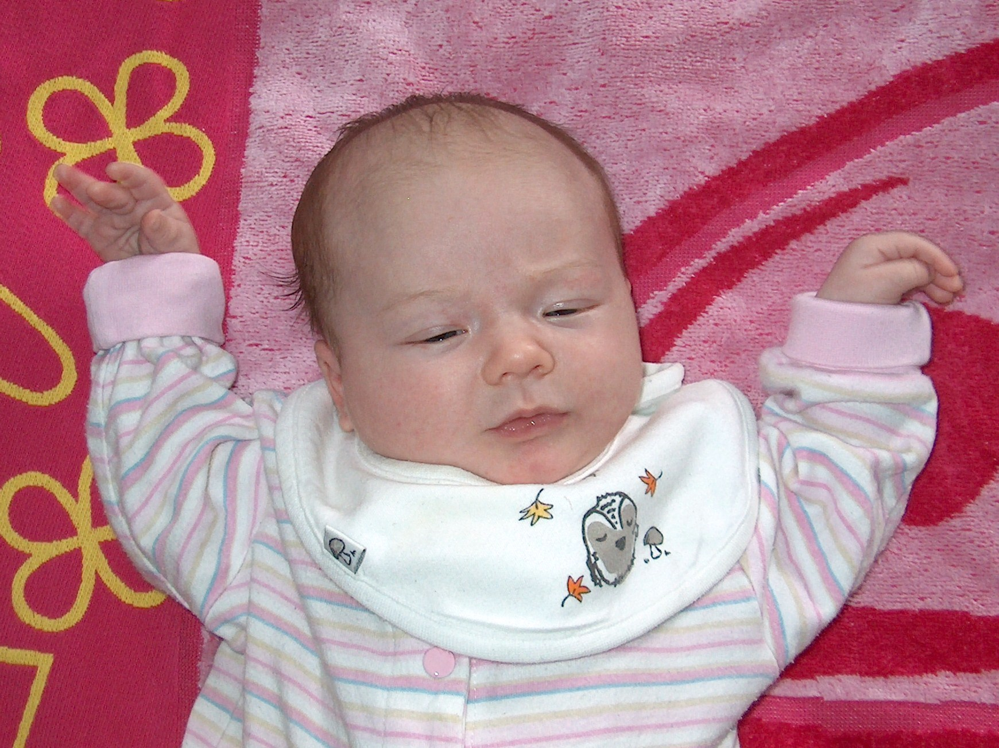
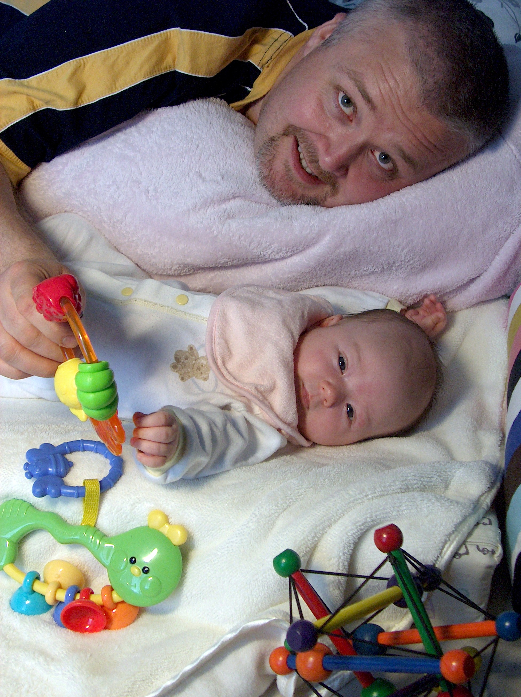
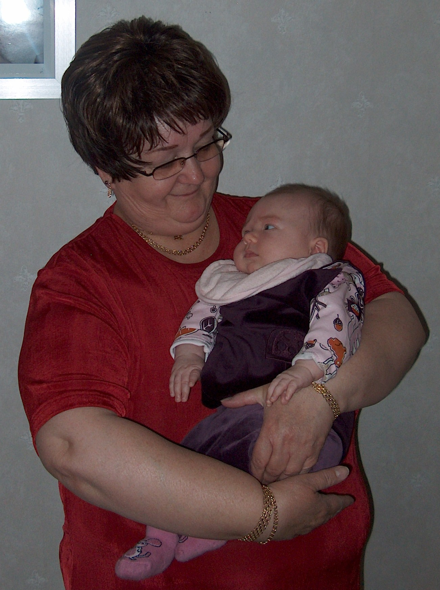
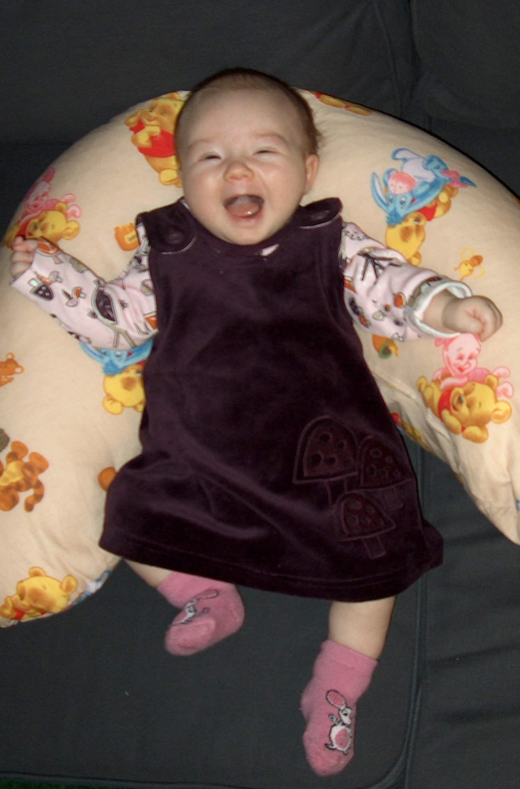
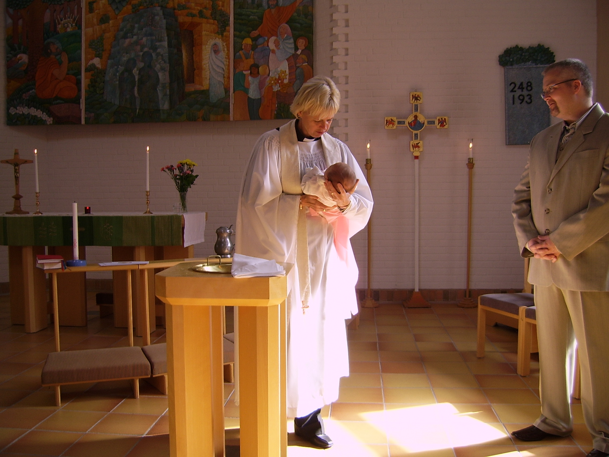
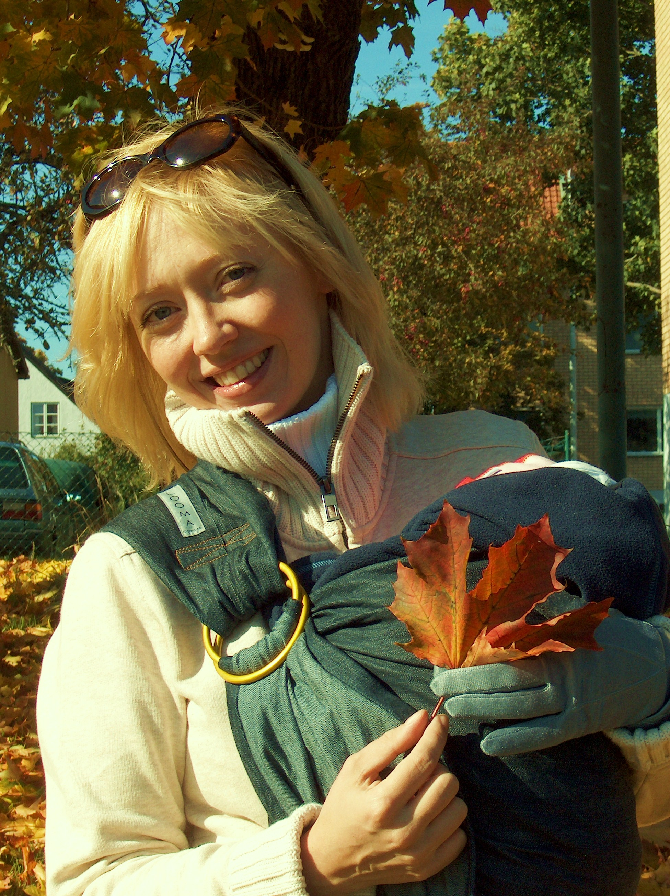
Kapitel 5
Våren vaknar, du vaknar
Mars–maj 2009
Vi åkte till Boden och Sävast. Första dagen kände du igen alla dina — du reagerade bra på alla. Men Dilba skrämde dig: ett skrik av skräck och förtjusning på samma gång. :) Dagen efter sov du från kl. 17 till 23 av ren utmattning.
10/3 — efter sex timmars sömn gav du en 40 minuter lång konsert. Vi filmade det. Du sjunger, Ann-Sofie. Det gör du verkligen.
17/3 — farmor Birgit harklade sig och du härmade direkt. Sedan harklade hon med flit — och du härmade igen. Och igen. När jag höll tummen upp och sa «а-а, бра?» upprepade du med ansträning: «а-а». :)
När du bestämde dig för att kasta något — eller visste att det skulle smälla — blundade du alltid i förväg, krampaktigt, med stängda ögon. Sedan smällde det. Sedan tittade du upp. Väldig kluring!!!
23/3 vinkade du hej då till pappa när han gick till jobbet på morgonen. Och du förstod spegeln — du insåg att jag inte var där inne utan här, och vände dig om mot mig.
Vi köpte barnvagn. HURRA!!! Du satte dig i den utan att gråta och var jätteglad i affären Willis när du åkte framåtvänd och kunde se mig och allt runt omkring.
11/4 — pappa såg en anka i pölen utanför huset och visade dig. Du tittade och tittade — och sparkade med benen av glädje!!! Sedan, när jag klappade pappa på baken, morrrade du till i protest. "Man klappar inte pappa!"
13/4 lärde du dig stå med stöd mot soffkudden. Sedan satt du dig ner på egen hand och läste oss en bok i 30 minuter — mest för dig själv.
16/4 — FÖRSTA TANDEN!!! Nere till höger. Jag trodde det var yoghurt. Det var en tand.
Varje morgon spelade vi «Ладушки» — en liten rysk ramsa med klapp och tramp och kyssning på kinden. Och sedan: «Водичка, водичка, умой моё личико» vid handfatet, och kamning till «Я люблю свою лошадку». Det var vår rutin. Varje dag.
5/5 slutade ett kraftigt regn plötsligt och solen kom fram. Över sjön — inte en regnbåge utan två. En regnbåge är bra. Två är bättre.
8/5 — middagen. Ett kraftigt «прют-прют». Vi låtsades inte märka. Du väntade. Sedan ännu ett, ännu kraftigare — pappa bröt ihop och skrattade. Jag med. Du hade väntat på exakt det. :)
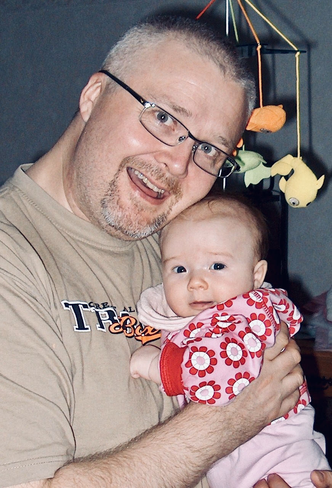
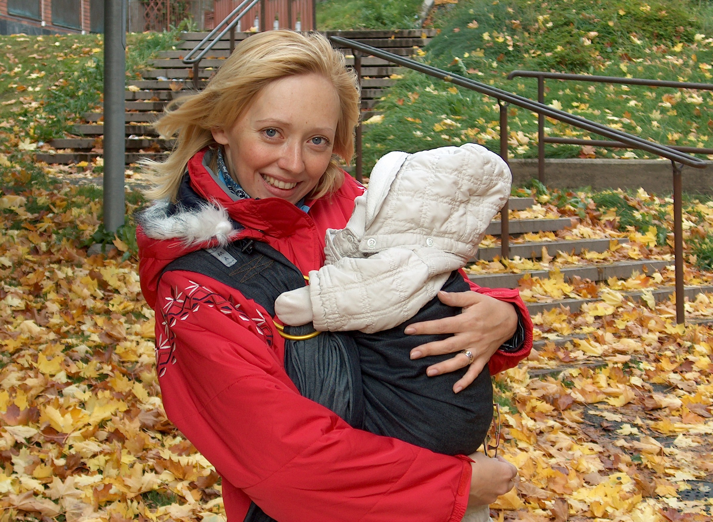
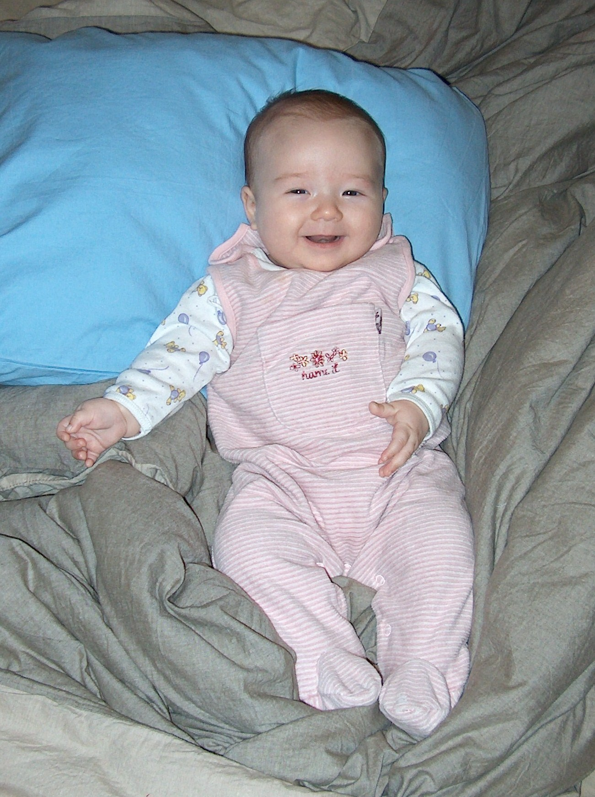
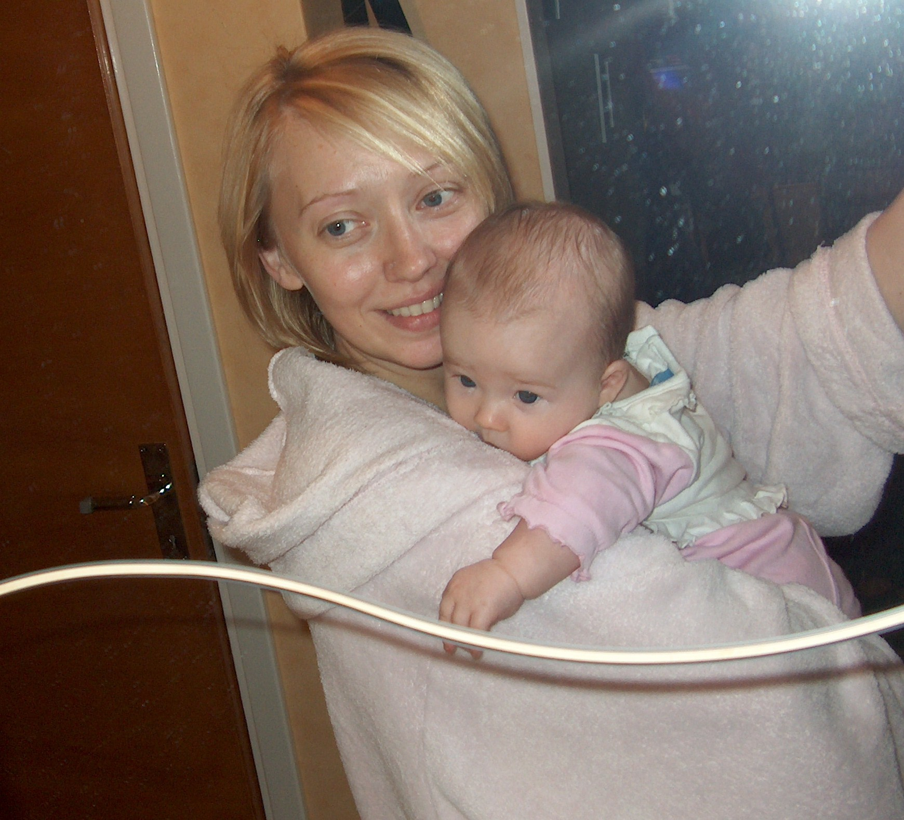
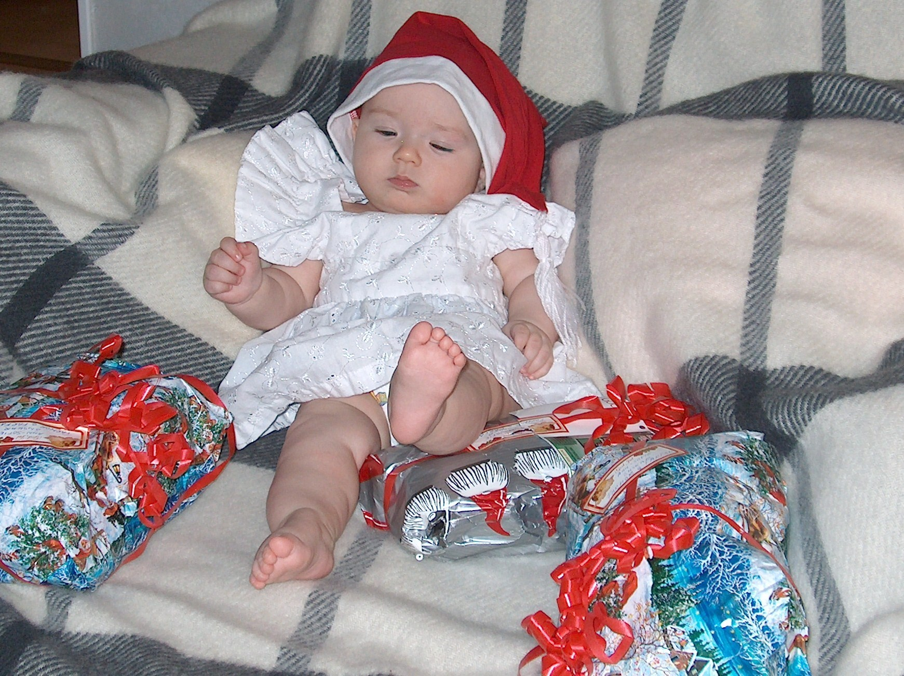
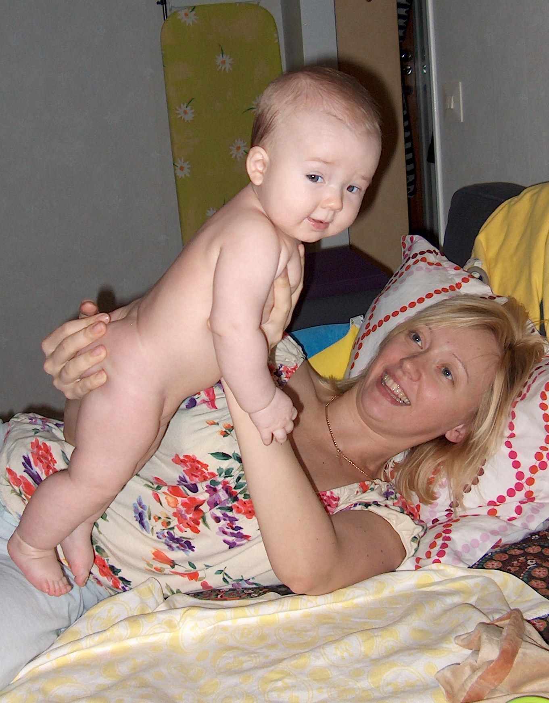
Kapitel 6
Hon kryper, vi köper hus
Maj–juli 2009
15/5 — du skickade ditt första SMS. Jag hade gett dig telefonen efter ett samtal med mormor. Du lekte så bra med den! Och sedan — en notis om att ett meddelande skickats. Du hade hållit in och skickat en ljudfil med dig själv. Och min telefon — du ändrade inställningarna så att den inte hade något ljud, och jag kunde inte lista ut hur man stänger av det!!!
19/5 — KRÖP!!! Jag städade lägenheten, du hade just kommit hem med pappa från promenad, jag skurade golvet i sovrummet — och du KRÖP! HURRA!
Inom några dagar kröp du från rummet till köket och tillbaka, hela vägen till korridoren där din leksakspåse stod. Du sa «мама», «папа», «ля» (lampa) — och «так» (tack) varje gång du fick något. Varje gång!!!
27/5 — vi tittade på ett hus i Degerfors. Gult, lite som Kalix. Du var så förtjust att du ville in!!! En granne-morfar kom fram — du grät inte, du log!!! Och på vägen hem — en regnbåge!!!
10/6 — VI KÖPER HUS!!!
30/6 — vi gick för att titta på ett hus. En stor schäfer stod utanför. Du tittade på den och sa, tydligt och klart — mäklaren var vittne: «ПАПА, ВУВЭ!» Din första mening. Två ord. Sedan upprepade du det framför restaurangen när du såg en liten hund: «ПАПА, ВУВЭ!» Du var nöjd.
6/7 — djurparken. Svalt men uppehållsväder. Lejon och tigrar gillade du — naturligtvis, besöket var en succé. Fåglarna skrämde dig.
Tre saker du lärde dig den här månaden som jag aldrig glömmer: att krypa, att säga tack varje gång — och att sätta ihop en mening när det verkligen gällde.
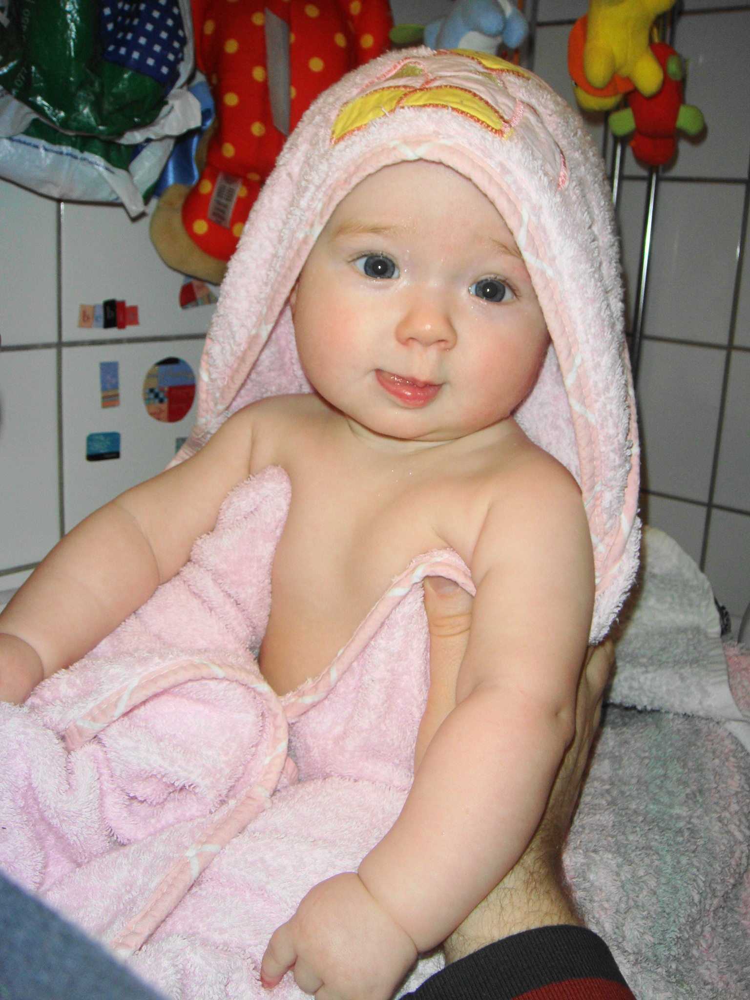
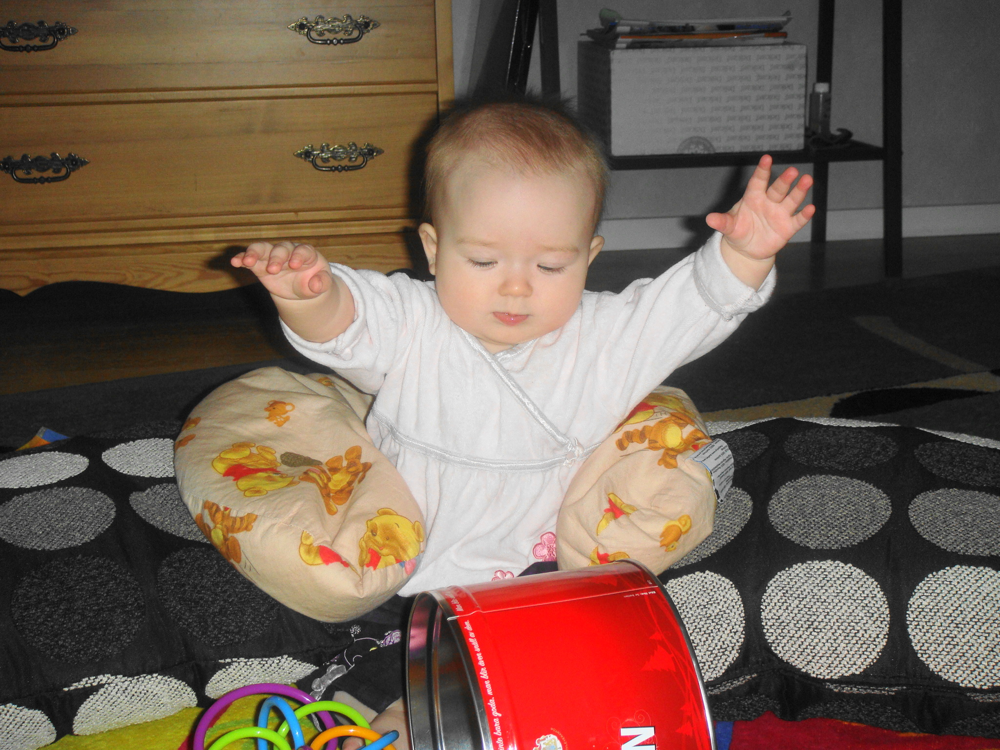
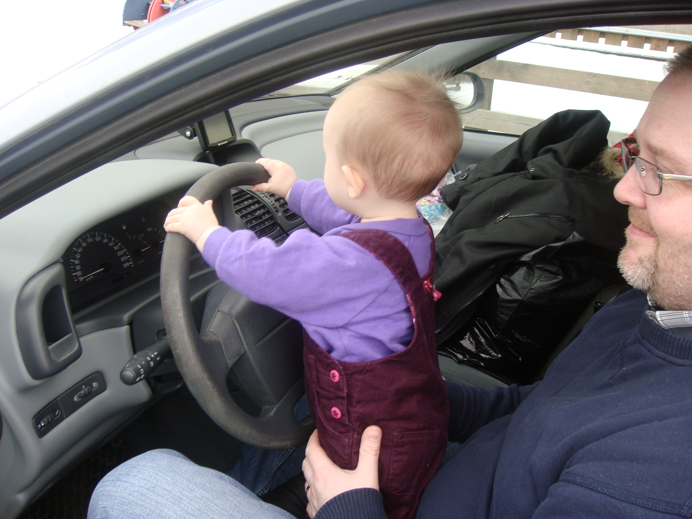
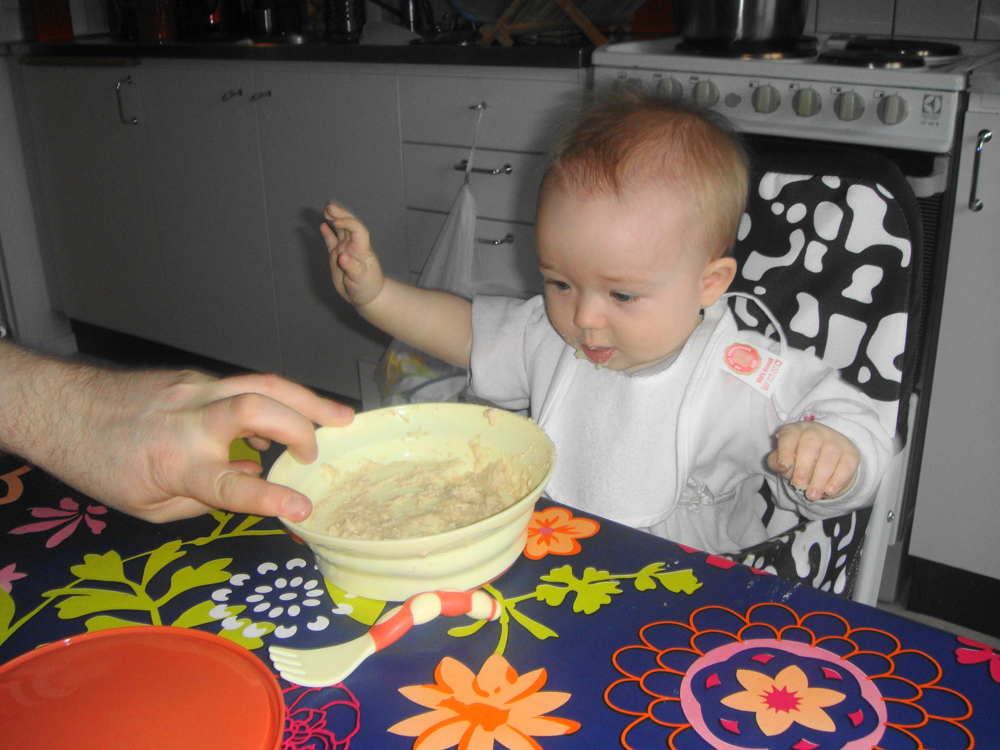
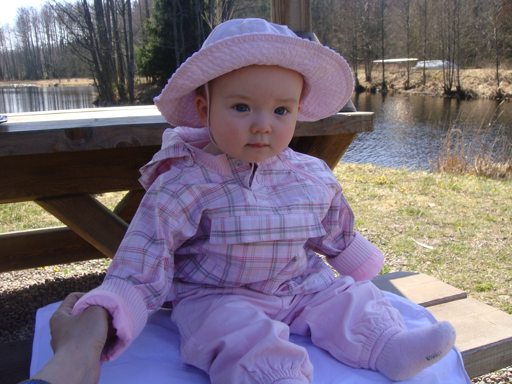
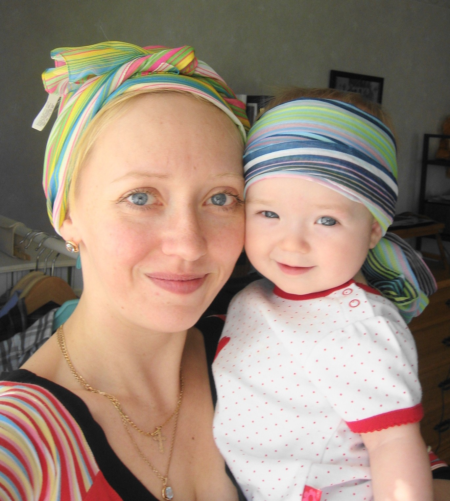
Kapitel 7
Steget
Juli–september 2009
21/7, kl. 12:30. Vi spelade boll. Du reste dig vid det lilla bordet — och tog ett steg mot mig!!! 11,5 månader gammal.
26/7 målade du din första tavla med alla 12 färgpennor. Sedan fick du stå vid diskbänken och diska och laga mat — du öste vatten med sked och smakade på det, och hällde resten på pappa som stod bakom dig. :) När vi försökte lyfta ner dig protesterade du.
28/7 åkte vi till Stockholm för att hämta mormor. Tre timmar i flygplatsen. Rulltrappan imponerade stort på dig. 30/7 köpte vi äntligen skor till dig! 31/7 var de för små — vi bytte storlek 16–17 mot 18–19.
1/8, kl. 17:45 — FÖRSTA STEGEN från mig till mormor!!! Tre gånger, modigt!!!
3/8 var det den hemska vaccinationsdagen. Du klamrade dig fast vid mig med benen runt min midja och händerna i mina kläder och skrek. Efteråt fick du ett kottar att hålla i handen, lade huvudet mot mitt bröst — och somnade. Men i sömnen snörvlade du fortfarande.
5/8 lärde du dig lyfta armarna när jag sa: "Uppträder folkartisten och olympiska mästaren Ann-Sofie Karolina Rönnqvist!"
6/8 frågade jag i spegeln: "Var är Ani-Sofie?" — du pekade på spegeln. Jag tog din hand och pekade på dig. Nästa gång frågade jag igen — du räckte stolt ut bröstet och magen. Här!
12/8 — DAGEN DU GICK SJÄLV. Från rummet till köket. Och med mormor upp för trappan till vinden.
19/8 sa du "Hej, pappa!" när han kom hem från jobbet. :)
31/8 — POTTA & HURRA!!! Du bajsade på pottan på morgonen — och applåderade för dig själv.
Ditt första ordförråd vid ett år: potta, tutte, hej, luja (luja = lujа = лужа), pappa, mamma, baba (mormor), lampa, vovve, ja, nej, mu (ko), pi-pi-pi (mus).
17/9 frågade jag: "Ann-Sofie, hur mår du?" — du svarade: "BRA, bra."
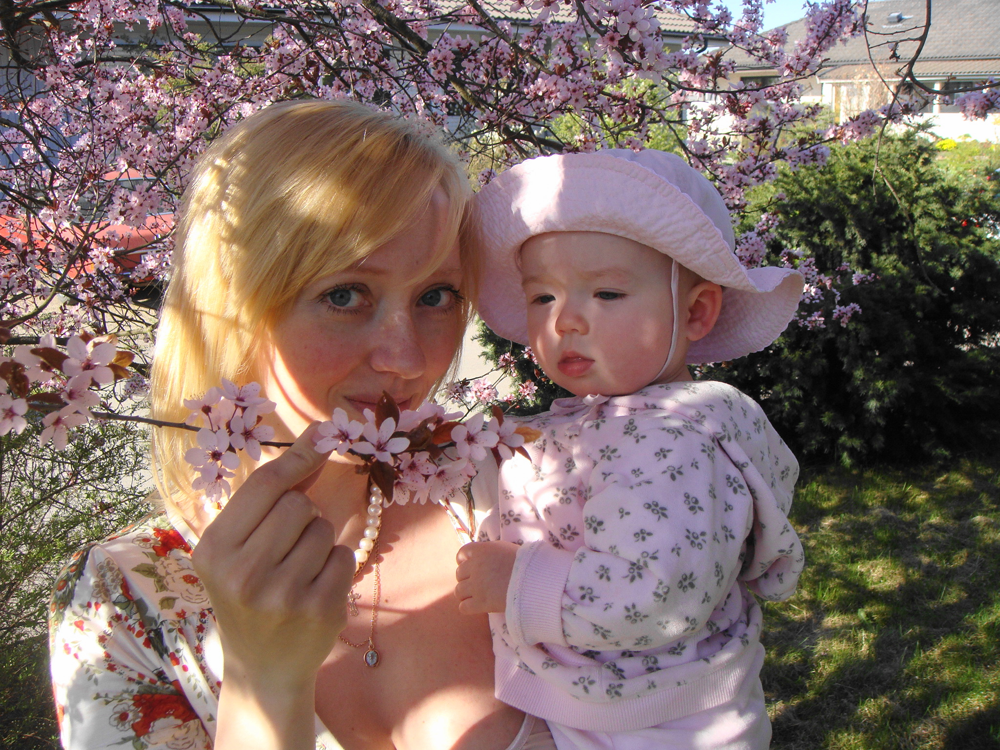
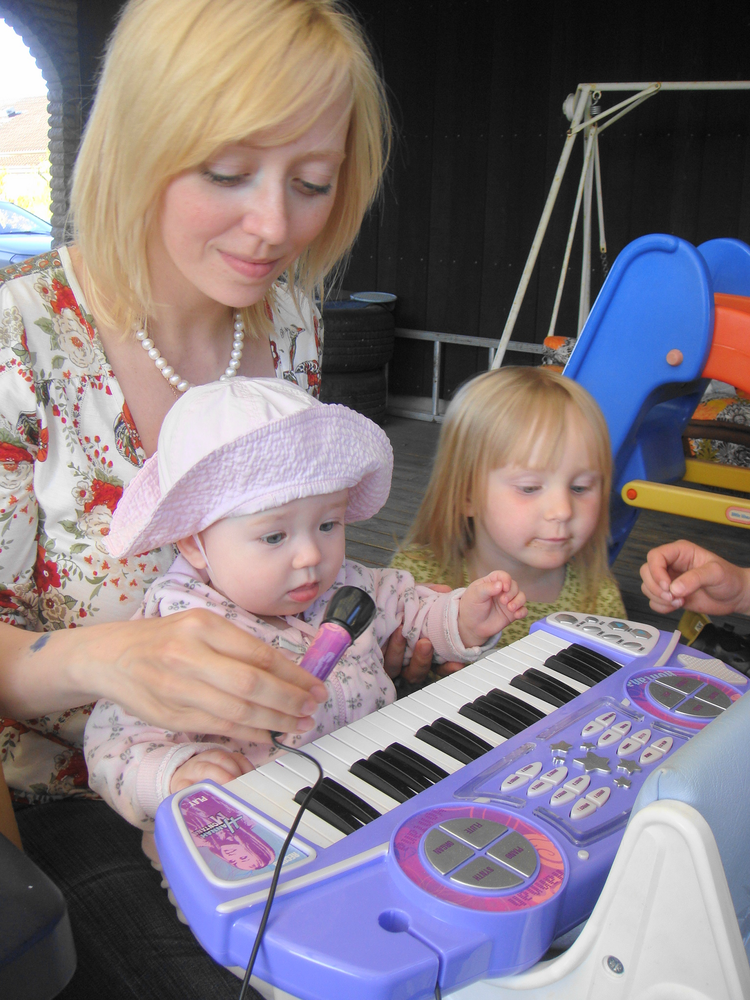
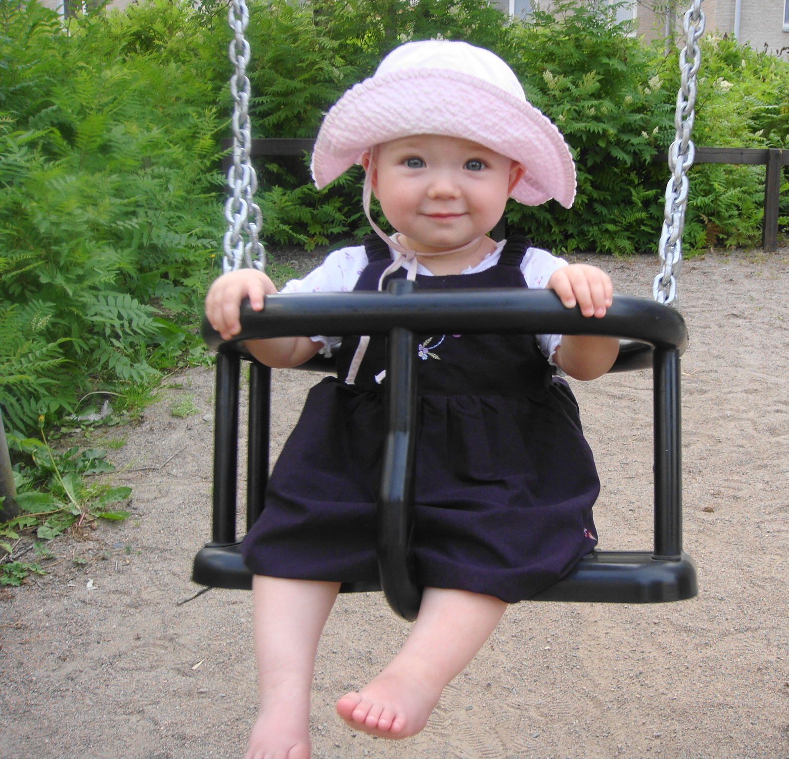
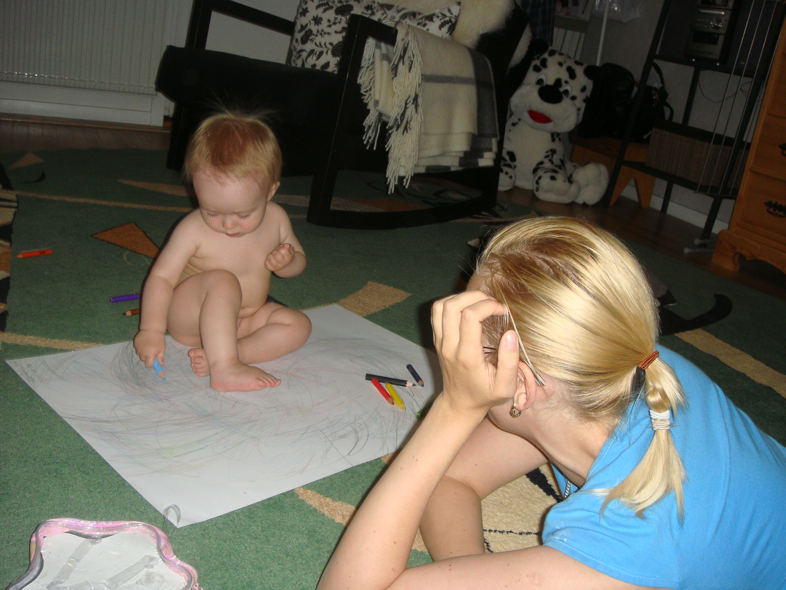
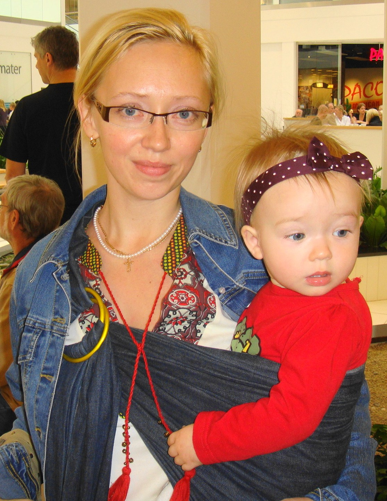
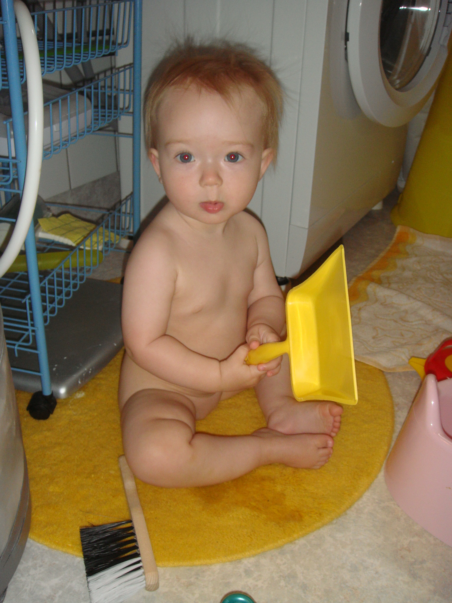
Kapitel 8
Ordexplosion
September–november 2009, ca 1 år 2–3,5 månader
25/9 — jag skulle till banken. Du ville till sandlådan. Vi gick ut, du lekte, sedan började jag gå mot busshållplatsen. Och du — gick efter mig. Tvärs över hela gården, på egen hand!!!
26/9 — nya ord: giraff, vatten, «пам» (föll), «куда?» (vart?), «где?» (var?).
30/9 — feber på natten. På dagen hittade vi sår i munnen. Stomatit. Dag 1 i ring-sjalen. Vi ringde flera olika instanser innan vi till slut kom till läkare. Pappa kom hem från apoteket med vatten — Vichy. Jag var lite förvånad. Dag 7 — frisk och glad från morgonen.
9/10 — stora förändringar. Ann-Sofie är ett begåvat barn — det är ett faktum. "Pappa, titta — giraff!!!" Hon förstår allt. Exakt allt. "Gå till garderoben och hämta flodhästen" — hon går och gör det.
15/10 — hör pappas hiss och säger «папа». Springer till dörren.
Hur Shrek blev «дядя»: du plockade fram Shrek 3, jag satte på den. I scenen där bebisarna ropar «Daddy» — sa du tydligt: «Дядя». Och sedan kallades Shrek alltid så.
17/10 — SPRINGER!!! Och den dagen: hissen i köpcentrum hade grå plattor som såg våta ut. Du stannade framför varje en och gick försiktigt — precis som mamma och pappa lärt dig vid pölar. Sedan i bilen tittade vi på «Skönheten och odjuret». Du pekade på Skönheten. Jag sa "красавица". Du pekade på henne igen — och sedan på dig själv. Eftersom jag brukar säga: "Анн-Софи — красавица, всем ребятам нравится!" :)
22/10 — du lärde dig snabbt att ordet КАККА ger resultat vid kylskåpet. Du kom dit, sa «какка» och fick en bit Kinder. Smart flicka.
24/10–8/11 — tågresan till Sävast och Boden. Farfar Roger blev på två veckor din absoluta favorit. Inte på armen — men alltid i närheten för att prata. Dilba hunden matade du med allt du kunde hitta och sprang efter henne runt hela huset. "Аф, аф, аф!"
På hemvägen föll en ryggstödskudda på dig i kupén — du grät, mest av skräck. Vi bytte vagn.
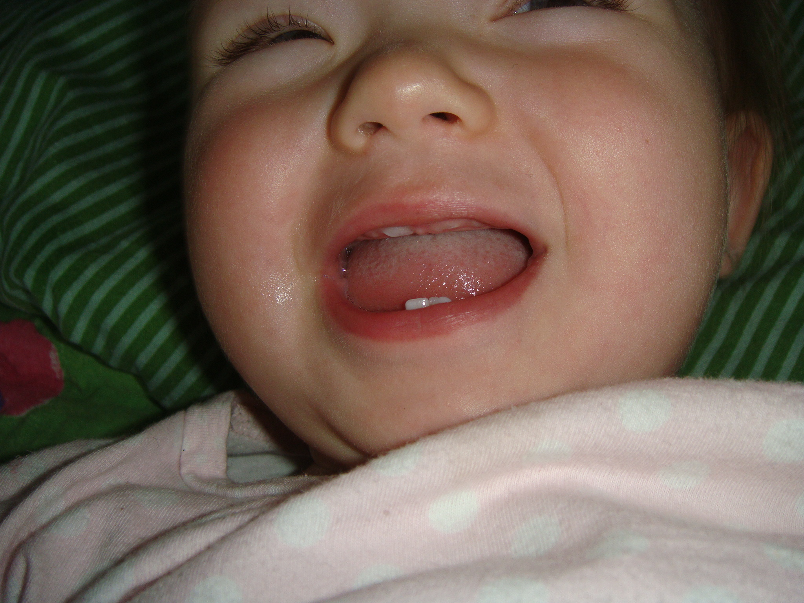
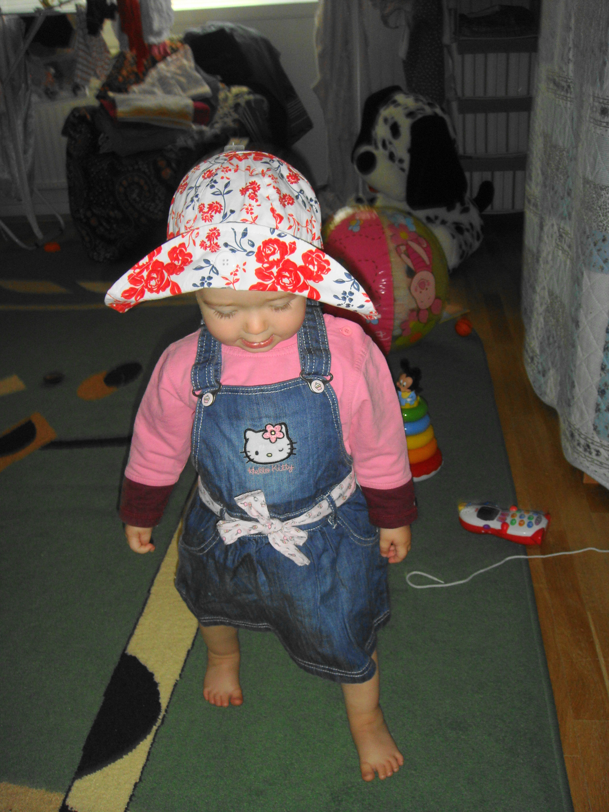
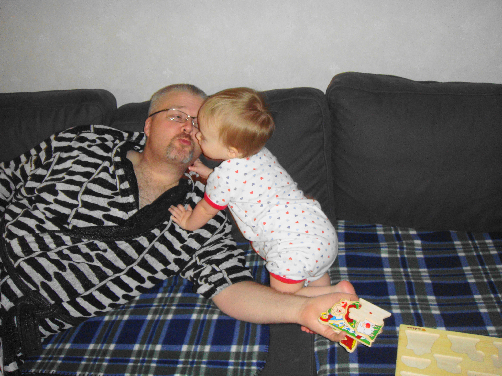
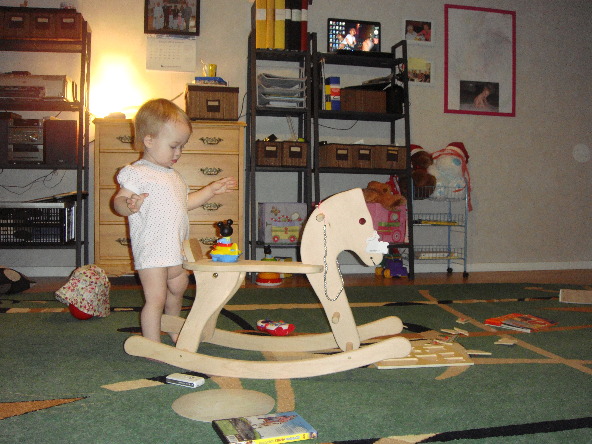
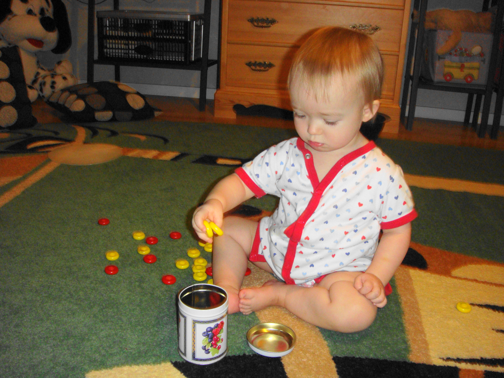
Kapitel 9
Karaktär och ett stort hus
November 2009 – mars 2010
12/11 — äter med GAFFEL!!! Sitter fem minuter vid bordet, går sedan iväg «på affärer», men kommer tillbaka och äter igen, bit för bit, med gaffeln. Respekt.
19/11 — busfröken. Springer, bråkar, försöker klättra upp på soffan och fönsterbrädan. Och skakar på huvudet NEJ — med mening. "Ann-Sofie, ska du gå på benen?" — "Нет!" "Ann-Sofie, vill du ha mer gröt?" — "Нет!"
Du hade börjat visa karaktär på riktigt: om något inte gick som du ville, gick du iväg för att vara ensam ett tag. En gång på gatan förstod du att jag inte tänkte gå dit du ville — och satte dig ner i snön och "föll". Jag observerade från hörnet. Du väntade på att jag skulle komma. :)
12/12 — jag läste en ramsa: «Кисонька-мурысенька, где была? — Коней пасла. — А где ворота? — Огонь сжёг.» — och du pekade direkt på ljuslyktan och blåste: "fuu!" Dagen innan hade jag tänt ett ljus och lagt det på fönsterbrädan och gått till köket och glömt. Du tog det med båda händerna — och hällde lyckligtvis från dig. Ingen skadades.
16/12 — första snön. Du blåste på den för att den brände.
30/12 — VI KÖPTE HUS! Ångermannagatan 5, Degerfors. Du lekte i glasrummet med en enorm spargris, och när alla skulle ta farväl och skaka hand — skakade du också hand med alla, och förtjuste hela rummet.
21/1 — kvällen lekte vi och jag sa "Я люблю тебя". Du svarade: «Ялюбюдядя» — "jag älskar dig" :) !!!
Samma natt löste jag sömnproblemet. Du vaknade gråtande, varje natt, varje timme. Jag sökte på nätet, läste, och nästa gång du grät tryckte jag dig hårt mot mig och sa: «Ты в этом мире. Мама Ира, папа Магнус. Всё страшное позади.» — Du är i den här världen. Mamma Ira, pappa Magnus. Allt det svåra är bakom oss.
Magnus sa nästa morgon: "Jag hörde henne inte alls!" :)
27/2 — du tittade på dina foton i mobilen. Jag frågade: "Vem är det?" Du svarade: "АА-И" — ANSOFIE!!! URA!!!
1 mars — HUSET ÄR VÅRT!!!
12/3 — renovering i köket. Du hjälpte: sopade skräp, skurade golvet, hämtade saker. På riktigt.
22/3 — vi tog bort alla hinder vid trappan. Du gick upp och ner
SJÄLVSTÄNDIGT!!!
HURRA!!!
(en trappritning med texten «sама!»)
Kapitel 10
Tvåspråkigt och två år
April–november 2010
2/4 — VI ÄR I HUSET! Du åker rutschkana på stjärten runt hela huset. :) Springer fram och tillbaka, upp och ner. Den andra natten i huset lade vi oss alla tre samtidigt — du pussade pappa, sedan mig, sedan pappa igen, sedan mig igen — och somnade mellan oss.
Du lurade oss hela tiden och skrattade när det lyckades. Till exempel: vi satt på övervåningens toalett och väntade på att du skulle kissa — du låtsades gråta, jag rusade in med dunder — du skrattade. Så höll det på i en halvtimme!!!
18/4 — du hittades i förskolan för första gången. Du cyklade på trehjuling när jag kom för att hämta dig, och när jag frågade om vi skulle gå hem — sa du "nej".
På pappas jobbet gick du fram till ekonomichefen, tog honom i handen och ledde honom någonstans med "kom, kom!" De frågade Magnus på vilket språk du pratar. Han svarade: ryska. :) Och tillade att du är pratglad efter mig, eftersom pappa på jobbet inte direkt...
27/5 — "Nej äta!" sa du när jag frågade om du ville äta. Mitt lilla tvåspråkiga barn! Да — bara på ryska. Nej — bara på svenska.
31/5 — vi klädde på dig för förskolan, kom till skorna. Du sa: "Маша, скурна!" (skorna!) Penna — du kan det ordet.
17/6 — du komponerade din egen sång: "Titta här, kolla här, pappa här, мама här." Vi har ett riktigt talent!
29/6 — du hittade ett hål i staketet och rymde till grannen för att "prata" med hans katt Oscar. Du hjälper på riktigt i trädgården — gräver, vattnar, krattar med dina egna krattor!!!
2/7 — munspel!!! Pappa lärde dig spela munspel och ni spelar tillsammans!!!
30/7 — TVÅ ÅR. Du kallar mig "Иа" — du missar R:et men det låter melodiskt. Om jag inte svarar på "mamma" får du mig alltid på "Ира".
Du sjunger ryska alfabetet. "Мы едем, едем". Och Smurfarna. Du dansar — SUPERBRA!!!
28/10 — JAG! Du började säga "jag" om dig själv.
1/11 — "Pappa tittar på teven." Åtta ord i en mening.
Och sedan: "Mamma, kasta inte bollen på golvet" — när jag sköt undan korten från soffan som du precis hade plockat upp.
Hon är pedagog. Hon lär oss — mig och pappa. På riktigt.
Kapitel 11
Fia, Anafia och allt däremellan
November 2010 – maj 2013
9/11/2010 — du är ett underbart barn. Klok, känslig, öm, med värdighet. På en video skrattar du och säger "tack" — ingen lärde dig det.
14/11 — Fars dag. Du frågade pappa: "Pappa, ska vi gå upp och titta på prinsessa Barbie Elina på teven?" Du hade 39 graders feber. Det märktes inte alls.
28/12 — du kallar dig bara Fia nu. :) Jag började göra det med flit — det är så roligt. I badrummet torkade jag dig och försökte krama och kyssa dig, men du tittade på din spegelbild och sa: "Min Fia! Min Fia!"
18/1/2011 — vi lade oss. Tyst och mörkt. Plötsligt frågar du högt: "Är mamma pruta?" — "Neej!" — "Inte? Förlåt då!" Sedan vid frukosten: ett litet ljud. Du låtsades inte märka. Pappa frågade vad det var. Du svarade: "ha-ha, Fia puk-puk". Jag sa artigt till pappa "ursäkta". Pappa upprepade "ah, ursäkta". Du tittade på oss båda och sa: "Ingen fara!"
8/2 — TVÅSPRÅKIG. Du sprang in och sa "Kissa mamma, jag vill kissa" — stannade, tittade på mig och sa: "Мама, пи-пи!" Du valde språk efter person.
23/2 — slut på amningen. 2 år och 7 månader ammade jag dig. Jag var tvungen att ta ett starkt läkemedel för första gången på 3,5 år — inte ens mot huvudvärk hade jag tagit något under graviditet eller amning. Dagen efter förstod du det under dagen. Men när du somnade på kvällen kramade du mig och petade på min mage. :)
28/4 — perioden "Jag vill ha den" byttes mot "Jag vill INTE!". Du gick själv och hämtade pottan. Klädde av dig. Satte på DVD. Åt gröten. Allt själv.
22/5/2011 — vi handlade tårta i affären. Vid kassan försvann du. En sekund. Vi sökte överallt — pappa sprang ut på parkeringen. Vi hittade dig vid potatishyllan. Du hade tagit tag i en vagn och gick envist vidare på din egen okända rutt och hade börjat undra varför du gick ensam.
I bilen berättade jag för pappa hur jag hittade dig. Och du — satt i baksätet och sa högt: "MAMMA! Här är jag!" — och klappade dig på bröstet.
27/7/2011 — tre år. Jag frågade: "Vem är du? En katt? En hund?" Du svarade: "Jag är underdog!" Jag sa: "Okej, vicka på öronen och flyg då." Paus. "Mamma, jag kan inte flyga!!!"
Höst 2011 — jag började på magisterprogrammet i Örebro. Du satt nere och ropade: "Mamma, vad gör du?" — "Jag jobbar." — "Men vad gör du?"
Du fick din egen dator av pappa. Ritade färgläggningsbilder utan mus. Väntade tålmodigt när den laddade: "Måste vänta!"
6/11 — jag förstod till slut varför du hela tiden sa "Mamma, jag lovar dig!" Det var inte ett löfte. Det var: Mamma, jag lova dig. Lublu tebjya!
Februari 2012 — perioden Fia är slut. Nu heter du Anafia. Du älskar att dansa, sjunga, springa, hoppa, skrika och titta på soffan. Du spelar katt och hund för att smeka dig mot oss. Och när du "läser" böcker för mig — rent dramatiskt talent.
20/2 — du öppnade Skype till farmor Birgit och sa artigt: "Ursäkta mig, kanske det finns en till vovve att visa mig." :)
19/4/2013 — du berättade för mig: "Mamma, först var jag... ett litet ägg i din mage, sedan växte jag och bröt skalet!"
22/4 — "Jag kan ryska, mamma!" — "Ja?" — "Vet du hur man säger tjej på ryska?" — "Нет." — "FLICKAN!" :)
På bussen tryckte du på stop-knappen — klockan ringde inte. Vi gick av. Du gick fram till chauffören (en kvinna) och sa med uppräckt pekfinger: "När jag trycker stop — då måste du stanna!"
25/5 — du vaknade och frågade vad vi skulle göra. Jag sa: städa ditt rum. Du gick, började städa, kom tillbaka och frågade: "Kommer Milia?" Nej, sa jag, du ska gå till Milias kalas. Du sa: "Då städar jag inte — låt Milia städa hos sig, det är hon som får gäster."
Du hade 9 bokstäver i ditt namn. Ida har 3. Milia har 5. Ann-Sofie — 9. Du tyckte att det var orättvist. Jag tyckte att det var precis rätt.
Grattis på födelsedagen vår lilla Fia!
Mamma och Pappa älskar dig!
2026-07-30
Epilog
Till dig
Мой любимый, мой хороший,
мой ребёнок дорогой.
Ты мой сладкий, мой красивый,
мой здоровый, мой родной.Расти мудрой и успешной,
будь счастливой и неспешной.
Пусть удача в дом стучится
и богатство там живёт.Мой любимый, мой хороший,
мой ребёнок дорогой.
Ты мой сладкий, мой красивый,
мой здоровый, мой родной.
Min älskade, min fina,
mitt kära älsklingsbarn.
Du är min söta, min vackra,
min friska, min egen, min käraste.Väx upp klok och framgångsrik,
var lycklig och lev utan brådska.
Må lyckan knacka på din dörr
och välstånd bo i ditt hem.Min älskade, min fina,
mitt kära älsklingsbarn.
Du är min söta, min vackra,
min friska, min egen, min käraste.